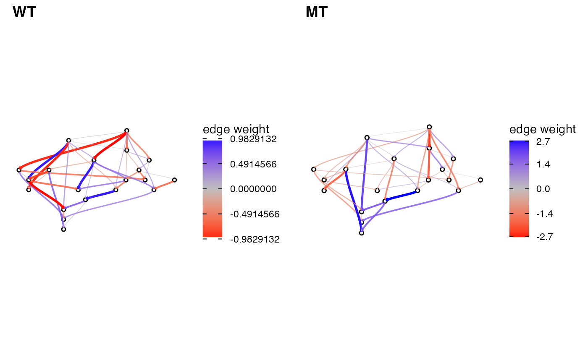
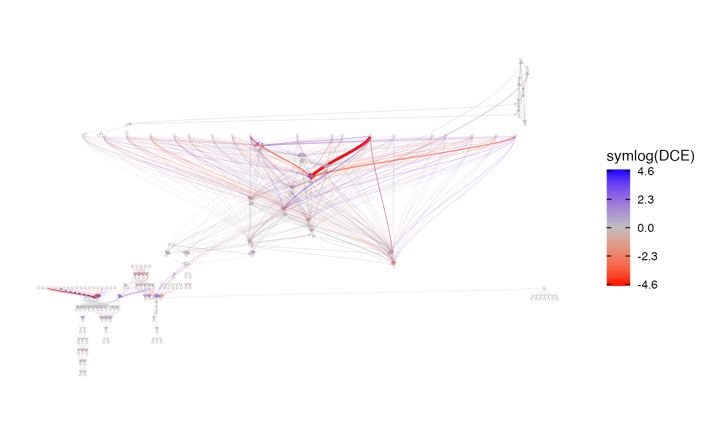
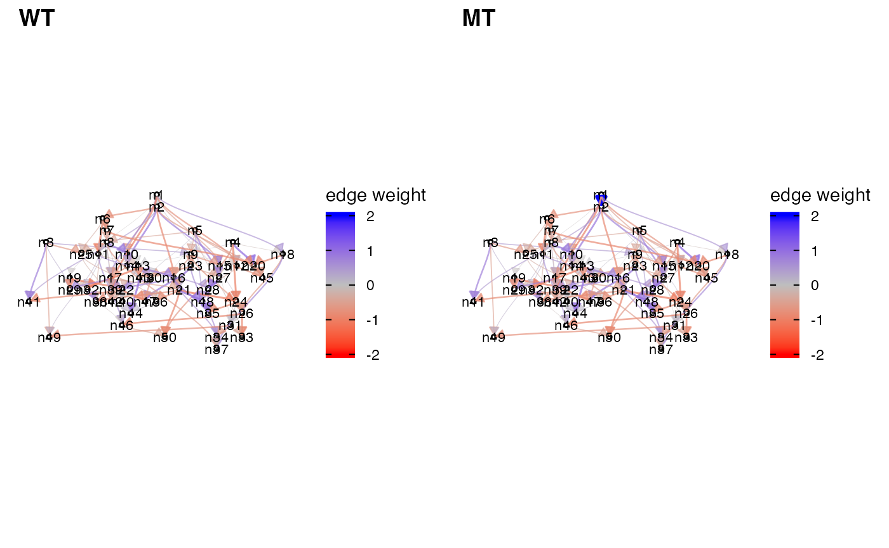
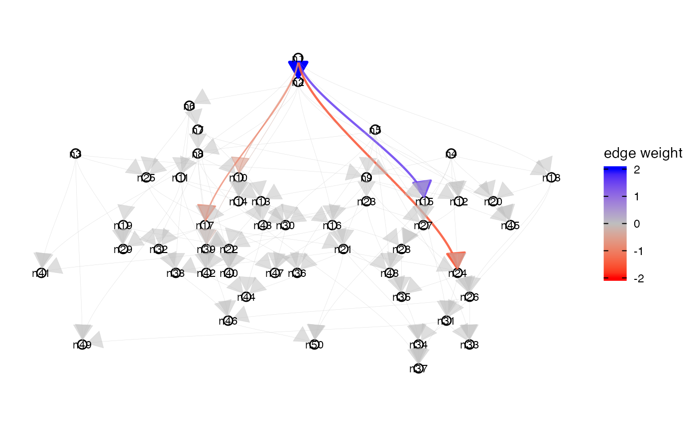
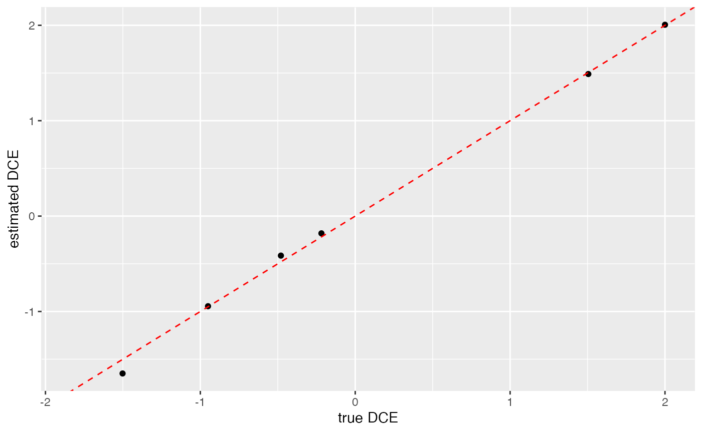
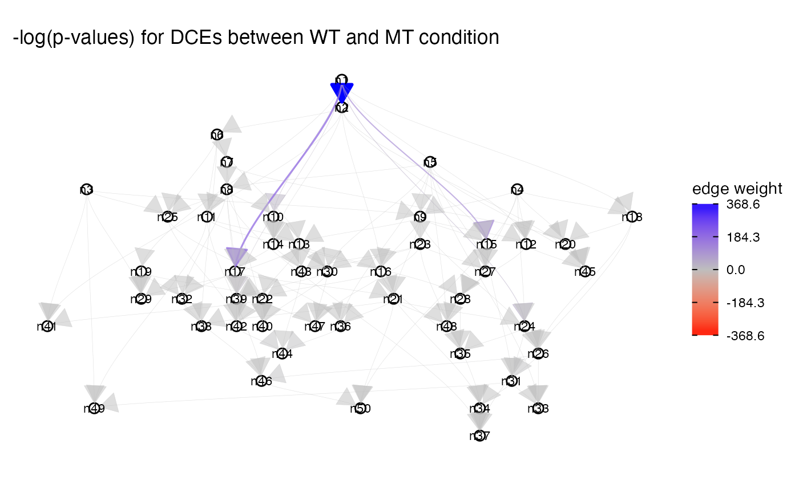
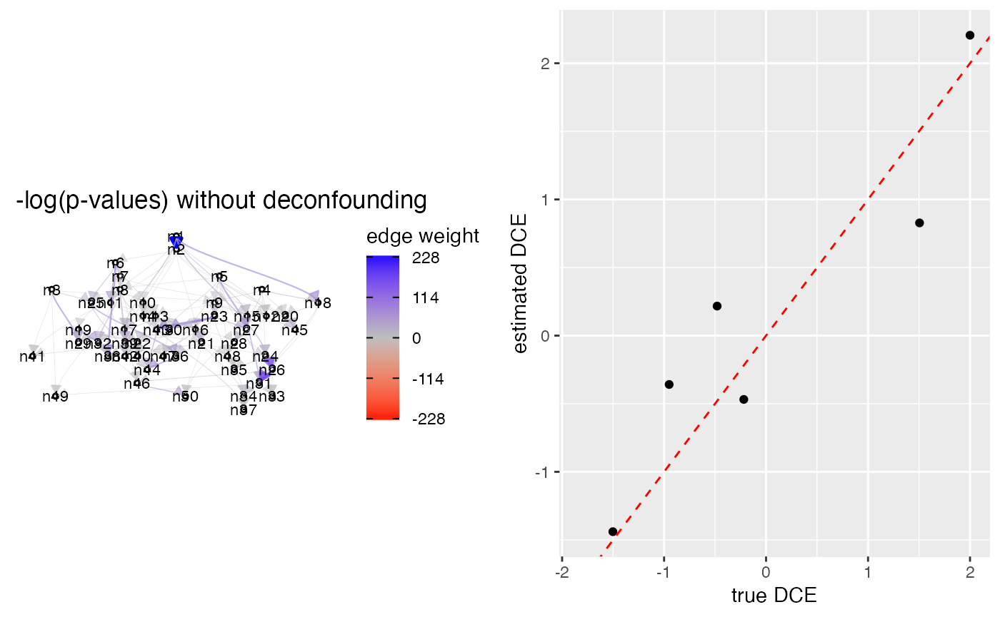

Overview
One cause of diseases like cancer is the dysregulation of signalling pathways. The interaction of two or more genes is changed and cell behaviour is changed in the malignant tissue.
The estimation of causal effects from observational data has previously been used to elucidate gene interactions. We extend this notion to compute Differential Causal Effects (DCE). We compare the causal effects between two conditions, such as a malignant tissue (e.g., from a tumor) and a healthy tissue to detect differences in the gene interactions.
However, computing causal effects solely from given observations is difficult, because it requires reconstructing the gene network beforehand. To overcome this issue, we use prior knowledge from literature. This largely improves performance and makes the estimation of DCEs more accurate.
Overall, we can detect pathways which play a prominent role in tumorigenesis. We can even pinpoint specific interaction in the pathway that make a large contribution to the rise of the disease.
You can learn more about the theory in our publication.
Installation
if (!require("BiocManager", quietly = TRUE))
install.packages("BiocManager")
BiocManager::install("dce")Load required packages
Load dce package and other required libraries.
# fix "object 'guide_edge_colourbar' of mode 'function' was not found"
# when building vignettes
# (see also https://github.com/thomasp85/ggraph/issues/75)
library(ggraph)
library(curatedTCGAData)
library(TCGAutils)
library(SummarizedExperiment)
library(tidyverse)
library(cowplot)
library(graph)
library(dce)
set.seed(42)Introductory example
To demonstrate the basic idea of Differential Causal Effects (DCEs), we first artificially create a wild-type network by setting up its adjacency matrix. The specified edge weights describe the direct causal effects and total causal effects are defined accordingly (Pearl 2010). In this way, the detected dysregulations are endowed with a causal interpretation and spurious correlations are ignored. This can be achieved by using valid adjustment sets, assuming that the underlying network indeed models causal relationships accurately. In a biological setting, these networks correspond, for example, to a KEGG pathway (Kanehisa et al. 2004) in a healthy cell. Here, the edge weights correspond to proteins facilitating or inhibiting each others expression levels.
graph_wt <- matrix(c(0, 0, 0, 1, 0, 0, 1, 1, 0), 3, 3)
rownames(graph_wt) <- colnames(graph_wt) <- c("A", "B", "C")
graph_wt## A B C
## A 0 1 1
## B 0 0 1
## C 0 0 0In case of a disease, these pathways can become dysregulated. This can be expressed by a change in edge weights.
graph_mt <- graph_wt
graph_mt["A", "B"] <- 2.5 # dysregulation happens here!
graph_mt## A B C
## A 0 2.5 1
## B 0 0.0 1
## C 0 0.0 0
cowplot::plot_grid(
plot_network(graph_wt, edgescale_limits = c(-3, 3)),
plot_network(graph_mt, edgescale_limits = c(-3, 3)),
labels = c("WT", "MT")
)
By computing the counts based on the edge weights (root nodes are randomly initialized), we can generate synthetic expression data for each node in both networks. Both X_wt and X_mt then induce causal effects as defined in their respective adjacency matrices.
X_wt <- simulate_data(graph_wt)
X_mt <- simulate_data(graph_mt)
X_wt %>%
head## A B C
## [1,] 1117 398 802
## [2,] 964 244 501
## [3,] 963 246 469
## [4,] 1204 502 1032
## [5,] 848 125 251
## [6,] 1163 455 885Given the network topology (without edge weights!) and expression data from both WT and MT conditions, we can estimate the difference in causal effects for each edge between the two conditions. These are the aforementioned Differential Causal Effects (DCEs).
## source target dce dce_stderr dce_pvalue
## 1 A B 1.5443343 0.03062434 3.373144e-114
## 2 A C 1.5234426 0.04449333 1.207257e-84
## 3 B C 0.1152442 0.17882577 5.200452e-01Visualizing the result shows that we can recover the dysregulation of the edge from A to B. Note that since we are computing total causal effects, the causal effect of A on C has changed as well.

DCE reconstruction with non-trivial network
To get a better feeling for the behavior of dce, we will look at DCE estimates for a larger pathway. In particular, we create a \(20\) node wild-type (WT) network with edge probability \(0.3\) as well as a dysregulated mutated (MT) network.
set.seed(1337)
# create wild-type and mutant networks
graph_wt <- create_random_DAG(20, 0.3)
graph_mt <- resample_edge_weights(graph_wt)
cowplot::plot_grid(
plot_network(as(graph_wt, "matrix"), labelsize = 0, arrow_size = 0.01),
plot_network(as(graph_mt, "matrix"), labelsize = 0, arrow_size = 0.01),
labels = c("WT", "MT")
)
Next, we simulate gene expression data and compute DCEs.
# simulate gene expression data for both networks
X_wt <- simulate_data(graph_wt)
X_mt <- simulate_data(graph_mt)
# compute DCEs
res <- dce::dce(graph_wt, X_wt, X_mt)
df_dce <- res %>%
as.data.frame %>%
drop_na %>%
arrange(dce_pvalue)Finally, we compare the estimated to the ground truth DCEs.
# compute ground truth DCEs
dce_gt <- trueEffects(graph_mt) - trueEffects(graph_wt)
dce_gt_ind <- which(dce_gt != 0, arr.ind = TRUE)
# create plot
data.frame(
source = paste0("n", dce_gt_ind[, "row"]),
target = paste0("n", dce_gt_ind[, "col"]),
dce_ground_truth = dce_gt[dce_gt != 0]
) %>%
inner_join(df_dce, by = c("source", "target")) %>%
rename(dce_estimate = dce) %>%
ggplot(aes(x = dce_ground_truth, y = dce_estimate)) +
geom_abline(color = "gray") +
geom_point() +
xlab("DCE (ground truth") +
ylab("DCE (estimate)") +
theme_minimal()
We observe that dce is able to nicely recover DCEs of moderate as well as large and small magnitude.
Application to real data
Pathway dysregulations are a common cancer hallmark (Hanahan and Weinberg 2011). It is thus of interest to investigate how the causal effect magnitudes in relevant pathways vary between normal and tumor samples.
Retrieve gene expression data
As a showcase, we download breast cancer (BRCA) RNA transcriptomics profiling data from TCGA (Tomczak, Czerwińska, and Wiznerowicz 2015).
brca <- curatedTCGAData(
diseaseCode = "BRCA",
assays = c("RNASeq2*"),
version = "2.0.1",
dry.run = FALSE
)## snapshotDate(): 2021-10-19## Working on: BRCA_RNASeq2Gene-20160128## see ?curatedTCGAData and browseVignettes('curatedTCGAData') for documentation## downloading 1 resources## retrieving 1 resource## loading from cache## Working on: BRCA_RNASeq2GeneNorm-20160128## see ?curatedTCGAData and browseVignettes('curatedTCGAData') for documentation## downloading 1 resources## retrieving 1 resource## loading from cache## Working on: BRCA_colData-20160128## see ?curatedTCGAData and browseVignettes('curatedTCGAData') for documentation## downloading 1 resources## retrieving 1 resource## loading from cache## Working on: BRCA_metadata-20160128## see ?curatedTCGAData and browseVignettes('curatedTCGAData') for documentation## downloading 1 resources## retrieving 1 resource## loading from cache## Working on: BRCA_sampleMap-20160128## see ?curatedTCGAData and browseVignettes('curatedTCGAData') for documentation## downloading 1 resources## retrieving 1 resource## loading from cache## harmonizing input:
## removing 13161 sampleMap rows not in names(experiments)
## removing 5 colData rownames not in sampleMap 'primary'This will retrieve all available samples for the requested data sets. These samples can be classified according to their site of origin.
sampleTables(brca)## $`BRCA_RNASeq2Gene-20160128`
##
## 01 06 11
## 1093 7 112
##
## $`BRCA_RNASeq2GeneNorm-20160128`
##
## 01 06 11
## 1093 7 112
data(sampleTypes, package = "TCGAutils")
sampleTypes %>%
dplyr::filter(Code %in% c("01", "06", "11"))## Code Definition Short.Letter.Code
## 1 01 Primary Solid Tumor TP
## 2 06 Metastatic TM
## 3 11 Solid Tissue Normal NTWe can extract Primary Solid Tumor and matched Solid Tissue Normale samples.
# split assays
brca_split <- splitAssays(brca, c("01", "11"))## Warning: 'splitAssays' is deprecated.
## Use 'TCGAsplitAssays' instead.
## See help("Deprecated")Retrieve biological pathway of interest
KEGG (Kanehisa et al. 2004) provides the breast cancer related pathway hsa05224. It can be easily retrieved using dce.
pathways <- get_pathways(pathway_list = list(kegg = c("Breast cancer")))## 'select()' returned 1:1 mapping between keys and columns
## 'select()' returned 1:1 mapping between keys and columns
## 'select()' returned 1:1 mapping between keys and columns
## 'select()' returned 1:1 mapping between keys and columns
## 'select()' returned 1:1 mapping between keys and columns
## 'select()' returned 1:1 mapping between keys and columns
brca_pathway <- pathways[[1]]$graphLuckily, it shares all genes with the cancer data set.
shared_genes <- intersect(nodes(brca_pathway), rownames(brca_wt))
glue::glue(
"Covered nodes: {length(shared_genes)}/{length(nodes(brca_pathway))}"
)## Covered nodes: 145/145Estimate Differential Causal Effects
We can now estimate the differences in causal effects between matched tumor and normal samples on a breast cancer specific pathway.
Interpretations may now begin.
## source target dce dce_stderr dce_pvalue
## 1 WNT8A FZD4 -4342.2001 2876.9003 1.326486e-01
## 2 FGF3 FGFR1 -1553.3334 1322.3358 2.413890e-01
## 3 WNT8B FZD4 -1540.1078 235.1719 4.038543e-10
## 4 WNT7A FZD4 -1334.3963 598.5797 2.680676e-02
## 5 FGF21 FGFR1 -917.1445 1128.4631 4.172471e-01
## 6 WNT8A FZD7 817.6733 954.3545 3.924979e-01
plot(
res,
nodesize = 20, labelsize = 1,
node_border_size = 0.05, arrow_size = 0.01,
use_symlog = TRUE,
shadowtext = TRUE
)
Latent Confounding Adjustment
We illustrate here how dce can help to adjust for some special types of unobserved confounding, such as batch effects. One needs a relatively large data set in order to detect confounding well.
We first generate the unconfounded data:
set.seed(1)
epsilon <- 1e-100
network_size <- 50
graph_wt <- as(create_random_DAG(network_size, prob = .2), "matrix")
graph_wt["n1", "n2"] <- epsilon
graph_mt <- graph_wt
graph_mt["n1", "n2"] <- 2
cowplot::plot_grid(
plot_network(graph_wt, edgescale_limits = c(-2, 2)),
plot_network(graph_mt, edgescale_limits = c(-2, 2)),
labels = c("WT", "MT")
)
truth <- trueEffects(graph_mt) - trueEffects(graph_wt)
plot_network(graph_wt, value_matrix = truth, edgescale_limits = c(-2, 2))
X_wt <- simulate_data(n = 100, graph_wt)
X_mt <- simulate_data(n = 100, graph_mt)For the unconfounded data dce estimates the differential causal effects well:
res <- dce(graph_mt, X_wt, X_mt, deconfounding = FALSE)
qplot(truth[truth != 0], res$dce[truth != 0]) +
geom_abline(color = "red", linetype = "dashed") +
xlab("true DCE") +
ylab("estimated DCE")## Warning: Removed 34 rows containing missing values (geom_point).
plot_network(graph_wt, value_matrix = -log(res$dce_pvalue)) +
ggtitle("-log(p-values) for DCEs between WT and MT condition")
On the other hand, if our data come from two different batches, where the gene expression of each gene is shifted by some amount depending on the batch, then dce will have many false positive findings:
batch <- sample(c(0, 1), replace = TRUE, nrow(X_wt))
bX_wt <- apply(X_wt, 2, function(x) x + max(x) * runif(1) * batch)
bX_mt <- apply(X_mt, 2, function(x) x + max(x) * runif(1) * batch)
res_without_deconf <- dce(graph_mt, bX_wt, bX_mt, deconfounding = FALSE)
cowplot::plot_grid(
plot_network(
graph_wt,
value_matrix = -log(res_without_deconf$dce_pvalue + epsilon)
) +
ggtitle("-log(p-values) without deconfounding"),
qplot(truth[truth != 0], res_without_deconf$dce[truth != 0]) +
geom_abline(color = "red", linetype = "dashed") +
xlab("true DCE") +
ylab("estimated DCE"),
nrow = 1
)## Warning: Removed 34 rows containing missing values (geom_point).
However, the performance is improved when the confounding adjustment is used:
res_with_deconf <- dce(graph_mt, bX_wt, bX_mt, deconfounding = 1)
cowplot::plot_grid(
plot_network(
graph_wt,
value_matrix = -log(res_with_deconf$dce_pvalue + epsilon)
) +
ggtitle("-log(p-values) with deconfounding"),
qplot(truth[truth != 0], res_with_deconf$dce[truth != 0]) +
geom_abline(color = "red", linetype = "dashed") +
xlab("true DCE") +
ylab("estimated DCE"),
nrow = 1
)## Warning: Removed 34 rows containing missing values (geom_point).
Session information
## R version 4.1.3 (2022-03-10)
## Platform: x86_64-apple-darwin17.0 (64-bit)
## Running under: macOS Big Sur/Monterey 10.16
##
## Matrix products: default
## BLAS: /Library/Frameworks/R.framework/Versions/4.1/Resources/lib/libRblas.0.dylib
## LAPACK: /Library/Frameworks/R.framework/Versions/4.1/Resources/lib/libRlapack.dylib
##
## locale:
## [1] en_US.UTF-8/en_US.UTF-8/en_US.UTF-8/C/en_US.UTF-8/en_US.UTF-8
##
## attached base packages:
## [1] stats4 stats graphics grDevices utils datasets methods
## [8] base
##
## other attached packages:
## [1] org.Hs.eg.db_3.14.0 AnnotationDbi_1.56.2
## [3] dce_0.99.6 graph_1.72.0
## [5] cowplot_1.1.1 forcats_0.5.1
## [7] stringr_1.4.0 dplyr_1.0.8
## [9] purrr_0.3.4 readr_2.1.2
## [11] tidyr_1.2.0 tibble_3.1.6
## [13] tidyverse_1.3.1 TCGAutils_1.14.0
## [15] curatedTCGAData_1.16.0 MultiAssayExperiment_1.20.0
## [17] SummarizedExperiment_1.24.0 Biobase_2.54.0
## [19] GenomicRanges_1.46.1 GenomeInfoDb_1.30.1
## [21] IRanges_2.28.0 S4Vectors_0.32.4
## [23] BiocGenerics_0.40.0 MatrixGenerics_1.6.0
## [25] matrixStats_0.61.0 ggraph_2.0.5
## [27] ggplot2_3.3.5 BiocStyle_2.22.0
##
## loaded via a namespace (and not attached):
## [1] rappdirs_0.3.3 rtracklayer_1.54.0
## [3] prabclus_2.3-2 ragg_1.2.2
## [5] bit64_4.0.5 knitr_1.38
## [7] multcomp_1.4-18 DelayedArray_0.20.0
## [9] data.table_1.14.2 wesanderson_0.3.6
## [11] KEGGREST_1.34.0 RCurl_1.98-1.6
## [13] generics_0.1.2 metap_1.8
## [15] GenomicFeatures_1.46.5 TH.data_1.1-0
## [17] RSQLite_2.2.11 shadowtext_0.1.1
## [19] proxy_0.4-26 CombinePValue_1.0
## [21] bit_4.0.4 tzdb_0.3.0
## [23] mutoss_0.1-12 xml2_1.3.3
## [25] lubridate_1.8.0 httpuv_1.6.5
## [27] assertthat_0.2.1 viridis_0.6.2
## [29] amap_0.8-18 xfun_0.30
## [31] hms_1.1.1 jquerylib_0.1.4
## [33] evaluate_0.15 promises_1.2.0.1
## [35] DEoptimR_1.0-10 fansi_1.0.3
## [37] restfulr_0.0.13 progress_1.2.2
## [39] dbplyr_2.1.1 readxl_1.4.0
## [41] Rgraphviz_2.38.0 igraph_1.2.11
## [43] DBI_1.1.2 tmvnsim_1.0-2
## [45] apcluster_1.4.9 RcppArmadillo_0.10.8.1.0
## [47] ellipsis_0.3.2 backports_1.4.1
## [49] bookdown_0.25 permute_0.9-7
## [51] harmonicmeanp_3.0 biomaRt_2.50.3
## [53] vctrs_0.4.0 abind_1.4-5
## [55] Linnorm_2.18.0 RcppEigen_0.3.3.9.1
## [57] cachem_1.0.6 withr_2.5.0
## [59] sfsmisc_1.1-12 ggforce_0.3.3
## [61] robustbase_0.93-9 bdsmatrix_1.3-4
## [63] checkmate_2.0.0 vegan_2.5-7
## [65] GenomicAlignments_1.30.0 pcalg_2.7-5
## [67] prettyunits_1.1.1 mclust_5.4.9
## [69] mnormt_2.0.2 cluster_2.1.2
## [71] ExperimentHub_2.2.1 GenomicDataCommons_1.18.0
## [73] crayon_1.5.1 ellipse_0.4.2
## [75] labeling_0.4.2 FMStable_0.1-2
## [77] edgeR_3.36.0 pkgconfig_2.0.3
## [79] qqconf_1.2.3 tweenr_1.0.2
## [81] nlme_3.1-155 ggm_2.5
## [83] nnet_7.3-17 rlang_1.0.2
## [85] diptest_0.76-0 lifecycle_1.0.1
## [87] sandwich_3.0-1 filelock_1.0.2
## [89] BiocFileCache_2.2.1 mathjaxr_1.6-0
## [91] modelr_0.1.8 AnnotationHub_3.2.2
## [93] cellranger_1.1.0 rprojroot_2.0.2
## [95] polyclip_1.10-0 Matrix_1.4-0
## [97] zoo_1.8-9 reprex_2.0.1
## [99] png_0.1-7 viridisLite_0.4.0
## [101] rjson_0.2.21 bitops_1.0-7
## [103] Biostrings_2.62.0 blob_1.2.2
## [105] scales_1.1.1 plyr_1.8.7
## [107] memoise_2.0.1 graphite_1.40.0
## [109] magrittr_2.0.3 gdata_2.18.0
## [111] zlibbioc_1.40.0 compiler_4.1.3
## [113] BiocIO_1.4.0 clue_0.3-60
## [115] plotrix_3.8-2 Rsamtools_2.10.0
## [117] cli_3.2.0 XVector_0.34.0
## [119] mgcv_1.8-39 MASS_7.3-55
## [121] tidyselect_1.1.2 stringi_1.7.6
## [123] textshaping_0.3.6 highr_0.9
## [125] yaml_2.3.5 locfit_1.5-9.5
## [127] ggrepel_0.9.1 grid_4.1.3
## [129] sass_0.4.1 tools_4.1.3
## [131] parallel_4.1.3 rstudioapi_0.13
## [133] snowfall_1.84-6.1 gridExtra_2.3
## [135] farver_2.1.0 Rtsne_0.15
## [137] digest_0.6.29 BiocManager_1.30.16
## [139] flexclust_1.4-0 shiny_1.7.1
## [141] mnem_1.10.0 fpc_2.2-9
## [143] ppcor_1.1 Rcpp_1.0.8.3
## [145] broom_0.7.12 BiocVersion_3.14.0
## [147] later_1.3.0 httr_1.4.2
## [149] ggdendro_0.1.23 naturalsort_0.1.3
## [151] kernlab_0.9-29 Rdpack_2.3
## [153] colorspace_2.0-3 rvest_1.0.2
## [155] XML_3.99-0.9 fs_1.5.2
## [157] splines_4.1.3 RBGL_1.70.0
## [159] statmod_1.4.36 sn_2.0.2
## [161] expm_0.999-6 pkgdown_2.0.2
## [163] graphlayouts_0.8.0 multtest_2.50.0
## [165] flexmix_2.3-17 systemfonts_1.0.4
## [167] xtable_1.8-4 jsonlite_1.8.0
## [169] tidygraph_1.2.0 corpcor_1.6.10
## [171] modeltools_0.2-23 R6_2.5.1
## [173] gmodels_2.18.1 TFisher_0.2.0
## [175] pillar_1.7.0 htmltools_0.5.2
## [177] mime_0.12 glue_1.6.2
## [179] fastmap_1.1.0 BiocParallel_1.28.3
## [181] class_7.3-20 interactiveDisplayBase_1.32.0
## [183] codetools_0.2-18 tsne_0.1-3.1
## [185] mvtnorm_1.1-3 utf8_1.2.2
## [187] lattice_0.20-45 bslib_0.3.1
## [189] logger_0.2.2 numDeriv_2016.8-1.1
## [191] curl_4.3.2 gtools_3.9.2
## [193] survival_3.2-13 limma_3.50.1
## [195] rmarkdown_2.13 fastICA_1.2-3
## [197] desc_1.4.1 munsell_0.5.0
## [199] e1071_1.7-9 fastcluster_1.2.3
## [201] GenomeInfoDbData_1.2.7 reshape2_1.4.4
## [203] haven_2.4.3 gtable_0.3.0
## [205] rbibutils_2.2.7References
Hanahan, Douglas, and Robert A Weinberg. 2011. “Hallmarks of Cancer: The Next Generation.” Cell 144 (5): 646–74.
Kanehisa, Minoru, Susumu Goto, Shuichi Kawashima, Yasushi Okuno, and Masahiro Hattori. 2004. “The Kegg Resource for Deciphering the Genome.” Nucleic Acids Research 32 (suppl_1): D277–D280.
Pearl, Judea. 2010. “Causal Inference.” Causality: Objectives and Assessment, 39–58.
Tomczak, Katarzyna, Patrycja Czerwińska, and Maciej Wiznerowicz. 2015. “The Cancer Genome Atlas (Tcga): An Immeasurable Source of Knowledge.” Contemporary Oncology 19 (1A): A68.